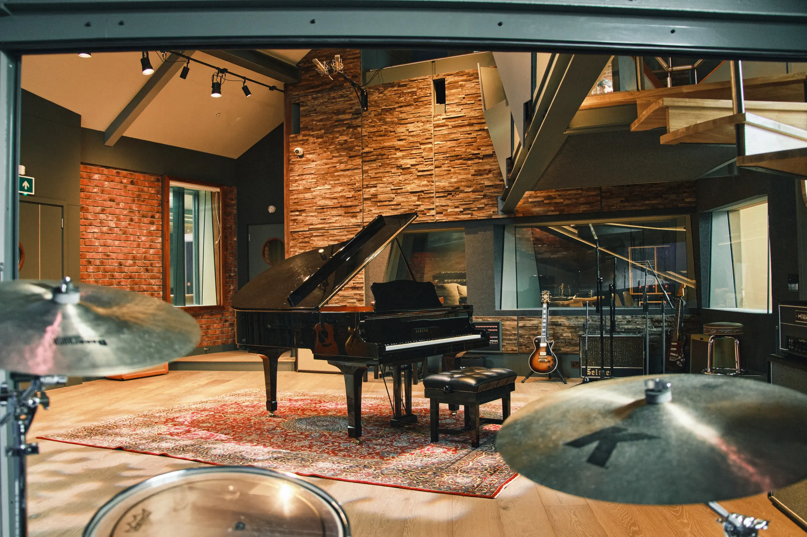
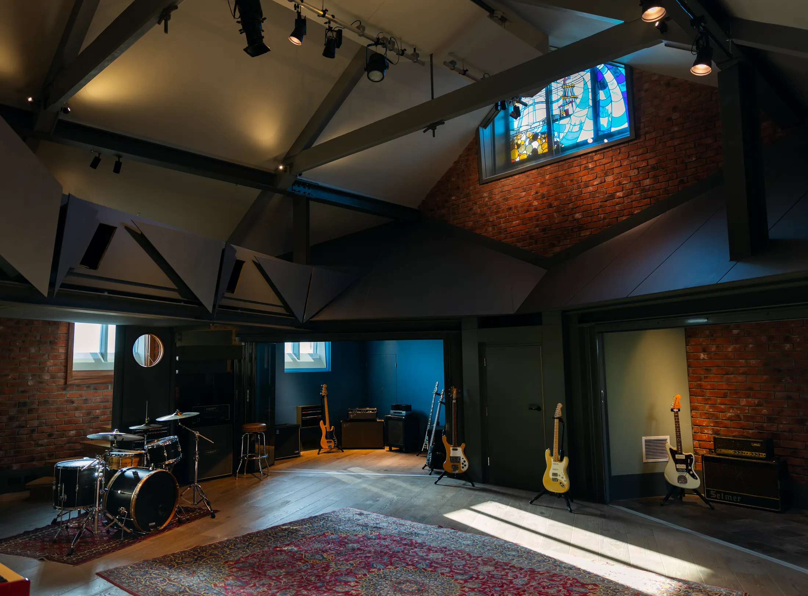

Send a clear session brief so the studio can confirm availability, rooms, engineering support and next steps quickly.
Address:
79 North Street, Brighton and Hove, Brighton BN41 1DH
Phone:
+44 333 444 5508
Email:
info@salvationstudios.co.uk
Google profile:
Open Salvation Music Studios on Google
Use the enquiry route for recording, mixing, dry hire, producer/engineer support, writing camps, catering and room availability. Send a short brief and the studio team can confirm the right rooms, support and next steps for your dates.
A world-class recording and writing complex in Brighton, moments from the seafront. Open the Google profile for the live map, routing and current public listing.
The studio is in Brighton and Hove at 79 North Street, BN41 1DH. Use the Google profile for routing; final parking, loading and access instructions should be confirmed with the studio for your session.
Tell the team your dates, number of days, team size, room preference, engineer/producer needs, session format and any accessibility or loading requirements.
The current site confirms catering can be arranged project-by-project, can seat up to 20 people, and ranges from simple hearty food to gourmet local options.
For parking, loading, access, opening-hour or accommodation planning, include your requirements in the enquiry and the studio team will confirm the best arrangements for your session.

This form opens a pre-filled email to Salvation. Phone and direct email remain available if you prefer to speak to the team first.
Yes. Salvation states that the studio is available for dry hire and that a studio assistant is provided to help the session run smoothly.
Yes. Enquiries should say whether you are bringing your own team or need Salvation to match you with producer, engineer or mixing support.
Yes. Salvation has assembled a roster of producers, engineers and mixers across genres and will discuss the sound you want before matching support.
The live room is built for serious tracking, with a 13m vaulted ceiling, floated floor, retractable glass-fronted isolation booths, an amp booth, gallery sightlines and climate control.
Yes — include gear requests in the enquiry. The public equipment list is extensive, but exact availability should always be confirmed for the booked dates.
Yes. Salvation can configure anything from one-room writing sessions to whole-complex writing camps, with technical support available during the stay.
Yes. Catering can be provided project-by-project, with seating for up to 20 people and options ranging from simple local food to gourmet quality.
Named accommodation recommendations are not published yet. Ask the studio for current local guidance when planning a writing camp or multi-day booking.